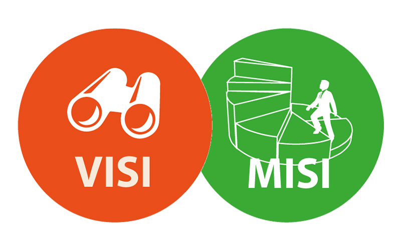

About us
Company History
Media Utama Pos, sebagai entitas berita dan penerbitan koran terkemuka yang berdiri kokoh sejak tahun 2006, telah menjelma menjadi sebuah pilar
tak tergoyahkan dalam ranah industri berita dan penerbitan koran yang bersemayam di bumi Indonesia yang subur dan beragam ini. Seiring berjalannya waktu,
perjalanan panjang kami telah disulap oleh upaya keras dan dedikasi yang tak kenal lelah, dengan tekad bulat untuk menyajikan konten-konten yang tak hanya relevan,
namun juga memancarkan mutu tinggi yang tak terbantahkan kepada jajaran pelanggan setia yang telah bersama-sama menemani kami dalam setiap langkah perjalanan kami.

Mission & Vision
Mission & Vision
Mengukir citra sebagai penjaga kebenaran dan kualitas dalam pemberian berita, serta menjadi sumber pencerahan yang menghembuskan semangat
inklusi dan pemahaman yang mendalam dalam masyarakat yang beraneka ragam.
- Berkomitmen untuk memberikan berita dan informasi berkualitas tinggi yang mengedepankan fakta dan integritas sebagai pijakan utama,
sehingga setiap lapisan masyarakat dapat mengandalkan dan mempercayainya sebagai sumber pengetahuan yang andal.
- Menggali keberagaman dalam setiap sudut perspektif dengan maksud mencerahkan masyarakat terhadap pandangan dunia yang luas,
membuka pintu wawasan yang beragam dan berimbang, sehingga kita semua dapat memahami dan menghargai perbedaan sebagai kekayaan budaya.
- Aktif memacu dialog yang bermakna dan konstruktif melalui pemberitaan kami, mengundang refleksi dan debat yang mendalam, serta menjembatani
perbedaan pandangan dengan cara yang mendukung pertumbuhan sosial dan kemajuan kolektif.
- Menyediakan platform yang inklusif dan progresif bagi penulis dan jurnalis berbakat, memberikan mereka ruang untuk berkembang dan berinovasi,
serta mendukung pertumbuhan dan pencerahan individu-individu berbakat dalam dunia jurnalistik yang selalu berkembang.